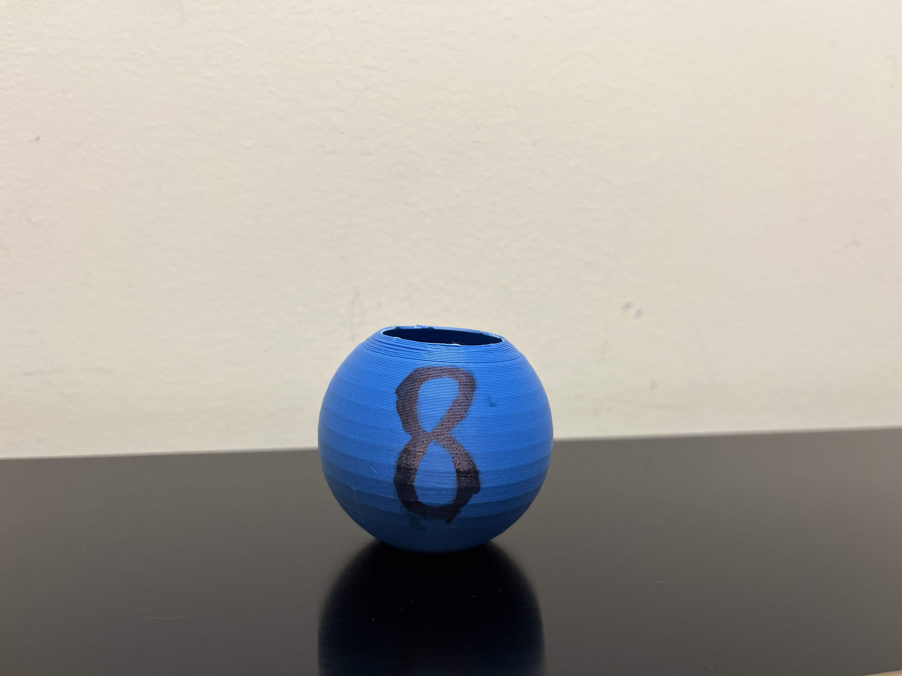

The idea for the Eight Ball of Uncertainty came from a simple observation: people often turn to novelty items like fortune-telling toys not because they believe in the answers, but because they enjoy the tiny spark of mystery and amusement they provide. Traditional Magic 8 Balls deliver decisive, almost authoritative predictions—Yes, No, Without a doubt. But life is rarely so clear-cut. In fact, most real decisions live in the grey areas between certainty and confusion.
The Eight Ball of Uncertainty was conceived as a playful celebration of that grey area. Instead of pretending to offer clarity, it embraces the ambiguity we all experience. It’s a toy for the indecisive, the over-thinkers, the philosophers, and anyone who knows that sometimes the most honest answer is, “I’m not sure.” Inspired by existential humor, Schrödinger’s cat, and the charming absurdity of overcomplicating simple questions, the Eight Ball of Uncertainty turns doubt into entertainment.
